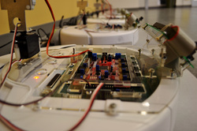

Honors Project
I am currently working on my capstone project for the Honors program at Iowa State University. Under the guidance of Christopher Hopkins in the Music department and Tien Nguyen of the department of Electrical and Computer Engineering, I am experimenting with using scripting to modify haptic-enabled virtual reality environments. I am using the H3D API, X3D, and Python to design creative ways of interacting with 3D scenes for the purpose of electroacoustic music composition and performance.
Embedded Systems

_Context: Embedded Systems final project
Technologies used: C, AVR Studio, SVN, assembly, Doxygen
Interlude: PIC. While abroad, I took a microprocessors and digital logic course that used PIC boards to simulate traffic signals. All programming on this project was done in assembly and focused on low-level understanding of programming.
Fast-forwarding to fall 2011 at ISU, my final project for my embedded systems course was a group project that involved navigating an iRobot Create (basically a Roomba) through an obstacle course over Bluetooth, using only sonar, radar, and bump sensors to detect our surroundings. Code was written primarily in C, with ISRs in assembly. In this project I gained valuable experience working on a team of five engineers, in addition to the obvious embedded systems skills acquisition. I wrote much of our backend code that drove the robot and communicated with our C# GUI over bluetooth. I performed extensive testing and calibration to ensure accurate and precise response of our robot to our commands. We received full marks after our successful demo (which we completed a week early).
Technologies used: C, AVR Studio, SVN, assembly, Doxygen
Interlude: PIC. While abroad, I took a microprocessors and digital logic course that used PIC boards to simulate traffic signals. All programming on this project was done in assembly and focused on low-level understanding of programming.
Fast-forwarding to fall 2011 at ISU, my final project for my embedded systems course was a group project that involved navigating an iRobot Create (basically a Roomba) through an obstacle course over Bluetooth, using only sonar, radar, and bump sensors to detect our surroundings. Code was written primarily in C, with ISRs in assembly. In this project I gained valuable experience working on a team of five engineers, in addition to the obvious embedded systems skills acquisition. I wrote much of our backend code that drove the robot and communicated with our C# GUI over bluetooth. I performed extensive testing and calibration to ensure accurate and precise response of our robot to our commands. We received full marks after our successful demo (which we completed a week early).
PageRank
Context: Applied math and probability project for discrete math/theoretical foundations of computer engineering.
Technologies used: Java
Skills acquired: Creating configurable packaged Java applications runnable from the command line; understanding of the basic PageRank algorithm, automated program performance testing,
My compiled code can be found here.
This was a free-form programming project in which I was to design an implementation of the PageRank algorithm to run on edge files, which contain two whitespace-delimited node indices per line, where each line is a directed edge from the first index to the second index. I chose to implement the traditional iterative version of PageRank, but opted to implement a Monte Carlo simulation in order to compare results between the different representations of popularity of a particular page. I enjoyed configuring this as a command line utility, providing various optional arguments to the user that configured the variables in the algorithms. As no specification was given as to how to accomplish this implementation, I researched the algorithm and processed simple examples by hand in order to ensure my understanding of its functionality. I wrote out simple pseudocode of a linked node graph implementation, set up my class structure, and then fleshed out the code. In order to ensure the accuracy of my implementation, I compared my results to my own hand calculated examples, an online PageRank calculator, and the results of my peers' independent implementations. I wrote a generator class to produce random edge files of provided specifications that allowed automation of performance testing. This project demonstrated to me the apparent difficulty of retrieving relevant searches on massive-scale data.
My project presentation, with more complete details and analysis is embedded below.
Technologies used: Java
Skills acquired: Creating configurable packaged Java applications runnable from the command line; understanding of the basic PageRank algorithm, automated program performance testing,
My compiled code can be found here.
This was a free-form programming project in which I was to design an implementation of the PageRank algorithm to run on edge files, which contain two whitespace-delimited node indices per line, where each line is a directed edge from the first index to the second index. I chose to implement the traditional iterative version of PageRank, but opted to implement a Monte Carlo simulation in order to compare results between the different representations of popularity of a particular page. I enjoyed configuring this as a command line utility, providing various optional arguments to the user that configured the variables in the algorithms. As no specification was given as to how to accomplish this implementation, I researched the algorithm and processed simple examples by hand in order to ensure my understanding of its functionality. I wrote out simple pseudocode of a linked node graph implementation, set up my class structure, and then fleshed out the code. In order to ensure the accuracy of my implementation, I compared my results to my own hand calculated examples, an online PageRank calculator, and the results of my peers' independent implementations. I wrote a generator class to produce random edge files of provided specifications that allowed automation of performance testing. This project demonstrated to me the apparent difficulty of retrieving relevant searches on massive-scale data.
My project presentation, with more complete details and analysis is embedded below.
Pong
Technologies used: Quby
Skills acquired: Very basic physical modelling and AI simulation
I often present workshops to youth about engineering and technical skills, particularly as a mentor with the Iowa 4-H Youth Tech Team (see my Leadership page for more information about my involvement with the Tech Team). I led them in a workshop about the basics of programming using PlayMyCode.com, an excellent in-browser game development community. I previously used and modified existing games to demonstrate programming concepts. I decided to write an implementation of Pong with the intention of walking the team through creating it on their own, demonstrating new concepts as we encountered them. My implementation (in Quby, a Ruby-based language that compiles to Javascript) uses global variables, local variables, three objects, a main event loop, conditional branching, simple physical modeling, and a simple pseudo-AI. Beginning with making a ball bounce around inside a rectangle, this is a fun way to introduce programming to youth that allows them to take ownership for a small project and have a tangible result upon completion. I wrote this implementation from scratch (including the simulated player concepts) in one sitting (about six total hours). While it's not perfect, it's completely functional and easy to understand. You can play it below and visit my PlayMyCode page to view my code and even make your own modifications if you like. I was happily surprised to see that I received a mention from the PlayMyCode site developers in their official blog for my game and its use in education.
Skills acquired: Very basic physical modelling and AI simulation
I often present workshops to youth about engineering and technical skills, particularly as a mentor with the Iowa 4-H Youth Tech Team (see my Leadership page for more information about my involvement with the Tech Team). I led them in a workshop about the basics of programming using PlayMyCode.com, an excellent in-browser game development community. I previously used and modified existing games to demonstrate programming concepts. I decided to write an implementation of Pong with the intention of walking the team through creating it on their own, demonstrating new concepts as we encountered them. My implementation (in Quby, a Ruby-based language that compiles to Javascript) uses global variables, local variables, three objects, a main event loop, conditional branching, simple physical modeling, and a simple pseudo-AI. Beginning with making a ball bounce around inside a rectangle, this is a fun way to introduce programming to youth that allows them to take ownership for a small project and have a tangible result upon completion. I wrote this implementation from scratch (including the simulated player concepts) in one sitting (about six total hours). While it's not perfect, it's completely functional and easy to understand. You can play it below and visit my PlayMyCode page to view my code and even make your own modifications if you like. I was happily surprised to see that I received a mention from the PlayMyCode site developers in their official blog for my game and its use in education.
MaxMSP
MaxMSP is a visual programming environment used for sound synthesis and MIDI processing. I first encountered MaxMSP during my introductory music technology class at Iowa State, Music 246, which focuses around mixing and mastering of recorded audio in ProTools. I had a strong interest in the class and wanted to take my involvement a step further than required by the syllabus. I worked with my professor, Dr. Hopkins, to add an additional project component by taking the class for Honors credit. I worked outside of class time to develop an arpeggiator patch in MaxMSP, exploring the environment on my own. I designed the project independently from the ground up, seeking guidance when needed.
I worked with MaxMSP much more during Music 446: Electronic Music Synthesis. This class explores the concepts of additive and subtractive synthesis using software like MaxMSP and ProTools. For an overview of synthesis concepts discussed here, see this brief discussion. Music 446 is project based, focusing on either instrument design or composition. I chose to explore instrument design, as I already had a strong background in electronic composition. My patch first allowed the user to select a key on a MIDI keyboard to use as a divider, and then select different waveforms to use above and below this divider.
For my second project, the additive synthesis unit, I designed an abstraction called pitchtrail~ that generated a glissando from a starting note to an ending note in a specified amount of time. I learned a lot about the inner workings of MaxMSP during this project, as composing using pitch trails pushes many areas of MaxMSP to their limits--primarily timing and processor power.
My inexperience with advanced MaxMSP programming actually furthered my knowledge of how the environment works on a low level; I accidentally implemented some standard library objects to be used in my project, not knowing of their existence until after completing it. In the end, my project worked exactly as I wanted, but was extremely processor intensive. With my DSP setup at the time, this meant that my sample composition ran exactly as expected, just at about 10% of real time.
The usage of my Project 2 patcher created an additional need that I sought to meet with my final project. Because pitch trails as such are not extant in the standard MaxMSP library, there is no simple way to compose using pitch trails. For my Project 1 demo I hand-specified each pitchtrail~ message and linked their onset to a counter. This is less than ideal, as it obfuscates the actual musical content of the composition.
Download a standalone version of my Pitch Trail Composer application for Windows or Mac OS X.
I worked with MaxMSP much more during Music 446: Electronic Music Synthesis. This class explores the concepts of additive and subtractive synthesis using software like MaxMSP and ProTools. For an overview of synthesis concepts discussed here, see this brief discussion. Music 446 is project based, focusing on either instrument design or composition. I chose to explore instrument design, as I already had a strong background in electronic composition. My patch first allowed the user to select a key on a MIDI keyboard to use as a divider, and then select different waveforms to use above and below this divider.
For my second project, the additive synthesis unit, I designed an abstraction called pitchtrail~ that generated a glissando from a starting note to an ending note in a specified amount of time. I learned a lot about the inner workings of MaxMSP during this project, as composing using pitch trails pushes many areas of MaxMSP to their limits--primarily timing and processor power.
My inexperience with advanced MaxMSP programming actually furthered my knowledge of how the environment works on a low level; I accidentally implemented some standard library objects to be used in my project, not knowing of their existence until after completing it. In the end, my project worked exactly as I wanted, but was extremely processor intensive. With my DSP setup at the time, this meant that my sample composition ran exactly as expected, just at about 10% of real time.
The usage of my Project 2 patcher created an additional need that I sought to meet with my final project. Because pitch trails as such are not extant in the standard MaxMSP library, there is no simple way to compose using pitch trails. For my Project 1 demo I hand-specified each pitchtrail~ message and linked their onset to a counter. This is less than ideal, as it obfuscates the actual musical content of the composition.
Download a standalone version of my Pitch Trail Composer application for Windows or Mac OS X.
_Electroacoustic Music Compositions
_While at the University of Birmingham, England, during my semester abroad,
I had the opportunity to study electroacoustic composition with Jonty
Harrison and Annie Mahtani. Brum, as it's known colloquially, has an
excellent post-grad program in electroacoustic music and an impressive sound theatre. I
took eight credit-hours of composition: Three in a seminar setting and
five in a small-group independent study with two final year music
students.
Electroacoustic music is the art form that takes ambient, usually recorded sounds and modifies them electronically to introduce musical gesture and form. This experience was a great addition to my music technology minor.
Below are my two final projects, "Etude" and "Chimeric Devotion" from my seminar and independent study courses, respectively.
Electroacoustic music is the art form that takes ambient, usually recorded sounds and modifies them electronically to introduce musical gesture and form. This experience was a great addition to my music technology minor.
Below are my two final projects, "Etude" and "Chimeric Devotion" from my seminar and independent study courses, respectively.